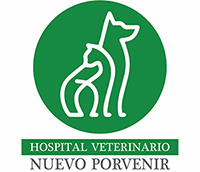
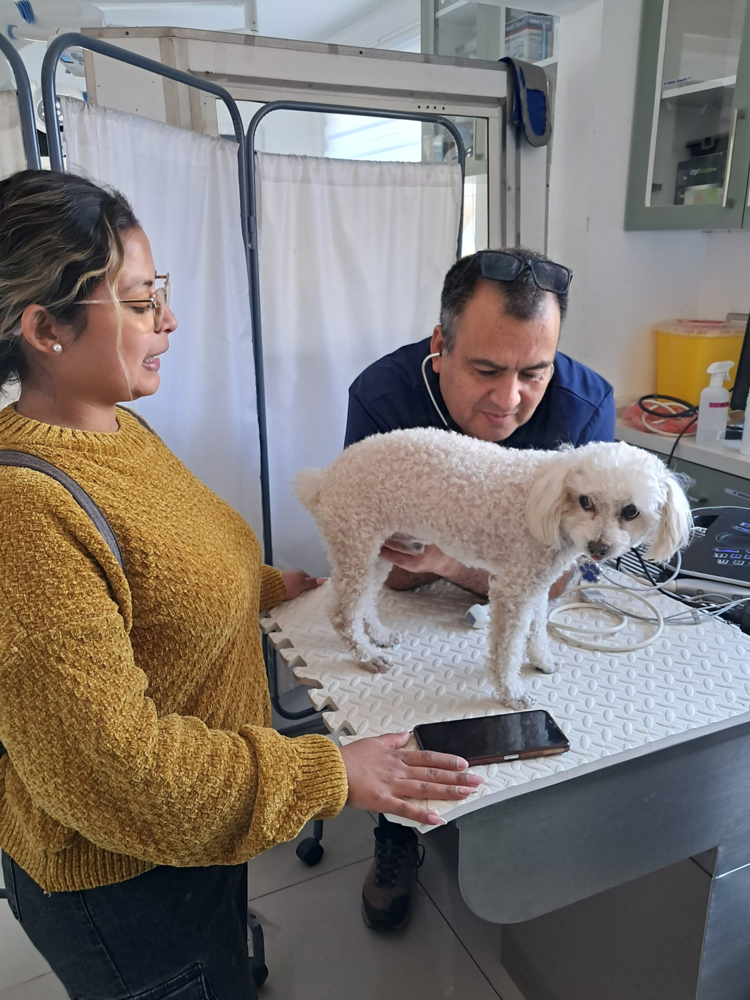
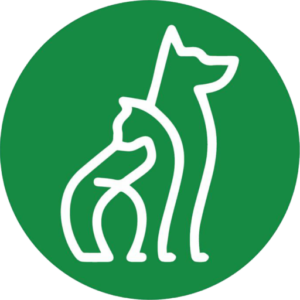
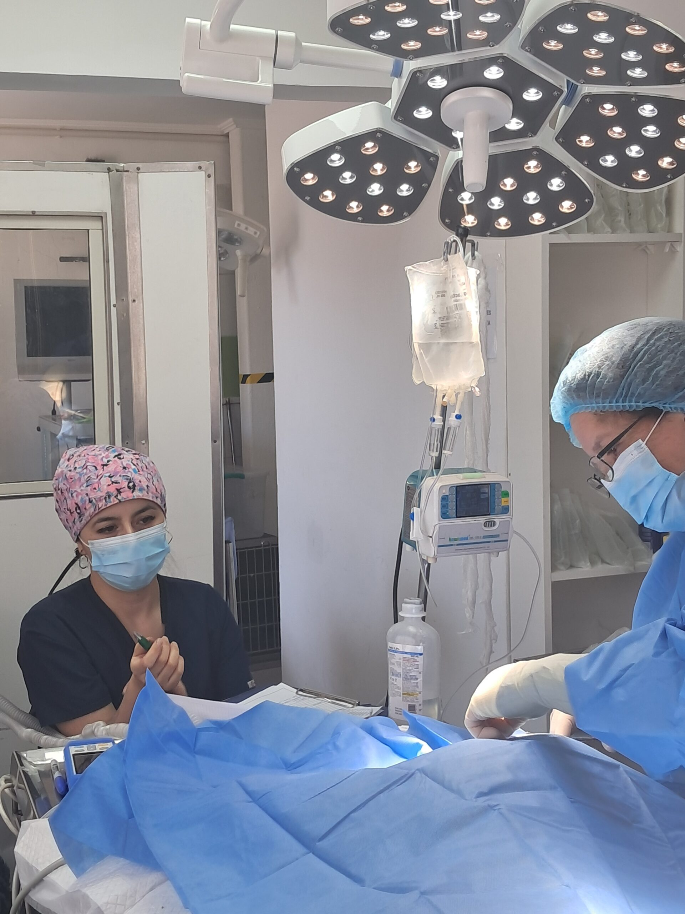

Agendar horaHospital veterinario en Puente Alto con cirugía, radiografía digital, ecografía y laboratorio propio. Desde 2008 cuidando a perros y gatos.


Ven o llámanos si tu perro o gato presenta alguno de estos signos:
Atención de urgencia y control de pacientes críticos, con fluidos y tratamientos médicos.
Esterilización, castración y cirugías de alta complejidad.
Radiografía digital, ecografía abdominal y ecocardiograma.
Perfil bioquímico, hemograma, urianálisis y hormonas.
Neurología, cardiología, traumatología, endocrinología, oftalmología, oncología, nefrología y odontología.
Vacunas, dermatología y control de salud. También cuentan con farmacia veterinaria.

Médicos veterinarios, técnicos veterinarios y administrativos, todos amantes de los animales y con formación profesional. Su hospital está equipado para medicina preventiva y cirugías de alta complejidad, con diagnóstico completo para ayudarte a decidir lo mejor para tu mascota.
Atención continua de lunes a domingo, incluidos los feriados.
Eyzaguirre 01285
Puente Alto, Santiago
Lunes a domingo, incluso feriados. Resultados de laboratorio disponibles en su sitio web.